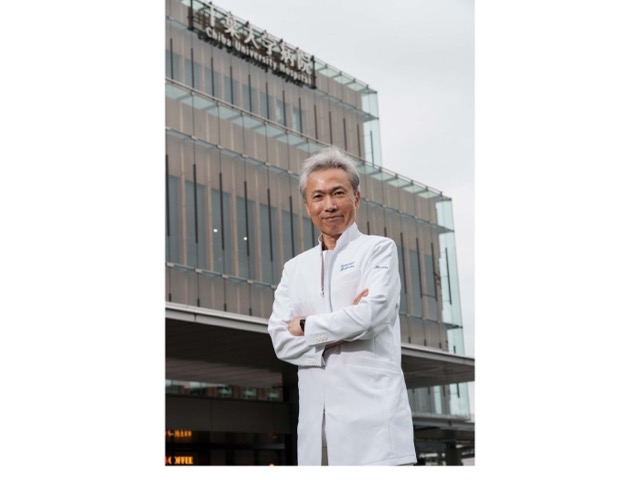
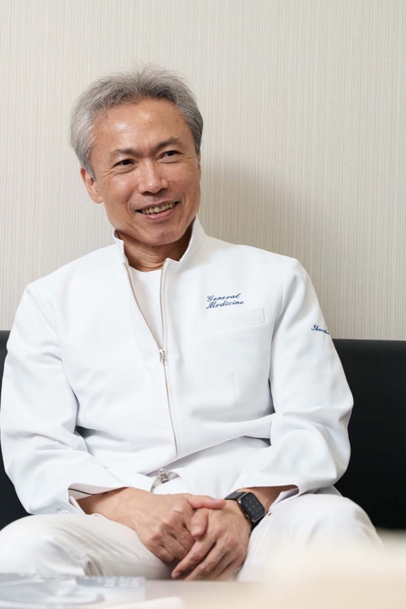
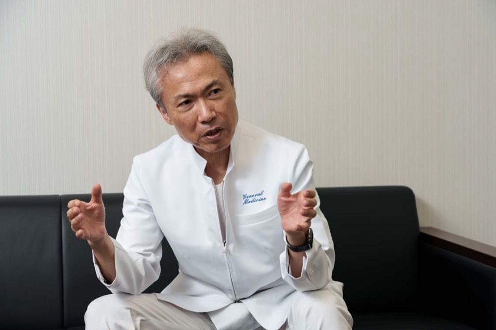
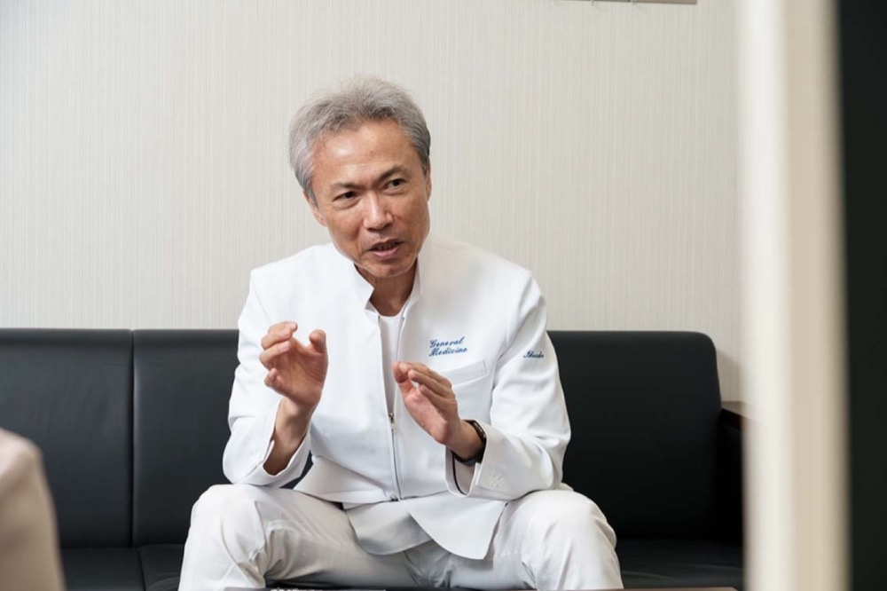
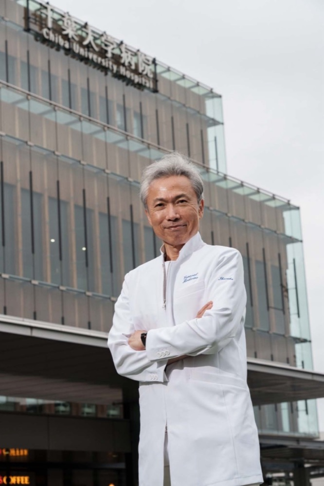

総合診療科の先駆者
生坂 政臣Masaomi Ikusaka
千葉大学医学部附属病院 教授
1958年福岡県生まれ。鳥取大学医学部卒業後、米国アイオワ大学で家庭医療学を修め、米国医師免許および家庭医療学専門医取得。2003年、千葉大学医学部附属病院に総合診療科を創設、同科教授に就任。2024年、千葉大学名誉教授に就任。総合診療の普及や診断精度向上のため教育活動にも尽力している。
企業サイトを見るTRACK 01
総合診療科の先駆者

米国に家庭医と呼ばれる専門医がいる。単なる町医者を超えて、家庭全体を診る医者だ。小さな子どもの発熱から、祖父母の慢性病のケア、さらには心の悩みまで、あらゆる世代の健康を守る。医療の専門分化が進んだ今、なんでも気軽に相談できる存在というのは頼もしい。家庭医は地域のコミュニティに深く根ざしており、患者と医師は、時に数十年にわたる付き合いとなることもあるのだとか。
そんな、地域住民の健康のために医療サービスを幅広く提供している家庭医。日本では総合診療医と称して、普及が始まっている。なかでも総合診療科のメッカとして位置づけられている千葉で、総合診療科の第一人者として今もなお第一線で活躍しているのが、千葉大学名誉教授の生坂政臣先生だ。
彼の物語は、平凡な成功譚などではない。むしろ、それは必然的な運命と偶然が交錯する、一種の鮮烈な小説のような人生といえるかもしれない。
TRACK 02
わずかな問診で得た感動

福岡県で生まれ育ち、鳥取大学医学部に進学した生坂は、入学早々クロスカントリースキー部に誘われる。「スキー部だから冬はたくさん遊べるじゃないか、と安易に考えていました。それが入部してみると、みんなスキー板で、滑るんじゃなくて登るんですよ。まるで自衛隊みたいで…騙された！って思いました（笑）」と朗らかに語る生坂。知らないうちに過酷なスポーツの世界に引き込まれたのだという。
在学中には「医者になる前に、医学以外の道にも触れておきたい」と留学を決意。米国アリゾナの大学で宗教学を学び、バプテスト教会に通う日々を送っていた。そこで生坂は医療の本質に触れる事件を経験する。
実は生坂には、学生時代から悩まされていた謎の顎の痛みがあった。もちろん日本でも診察を行ったものの「ストレスのせいではないか」と片付けられてしまい、結局解決策がないまま、発症から2年もの間、苦しんでいた。


TRACK 03
診療科目のカベを壊せ
2003年、千葉大学医学部附属病院に総合診療科を創設した生坂。そのとき、国内にはいわゆる総合診療医と呼べる医師が非常に少なかった。よって、原因臓器の特定が難しく、総合的に診察する必要があると考えられる患者であっても、適切な診断や治療が受けにくい状況だった。これは日本の診療科目が臓器別で専門的に細分化されてきたという、言うなれば医学の進歩の副作用といえる。
その問題に気づいた生坂はいち早く「問診」というシンプルだが難しい技術に注目し、それを徹底的に追求。卓越した問診スキルを総合診療領域で普及することに務めたことで、より多くの患者を救う道を切り拓いていったのである。
また、NHKの医療番組制作にも関与。診療科目の垣根を越えて、症状から病気の本質を見抜く問診の過程を一般視聴者に伝えることで、総合診療という新しい診療スタイルの重要性を広く知らしめた。その勢いはとてつもなかった。番組は当初BS放送で始まったものの、視聴者の圧倒的な反響を受けて地上波での放送に格上げされ、ついにはシリーズ化されるほどの影響力を持つに至った。生坂が手掛けたこの番組は、総合診療という言葉を日本中に浸透させるきっかけとなったのである。